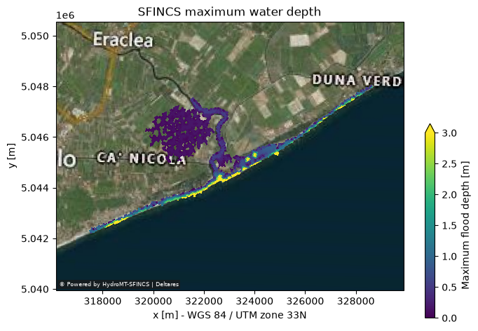

Tip
HydroMT-SFINCS | Example 05B
Example: downscale maximum water depth
Create high-resolution flood-depth maps from maximum water levels.
This notebook demonstrates flood-depth downscaling for models with subgrid tables. When subgrid tables are used, the bed elevation (zb) in the SFINCS output represents the minimum bed level within each computational cell. Subtracting it from maximum water levels can overestimate flood extent. Instead, interpolate zsmax onto a high-resolution DEM and subtract that DEM to obtain flood depth.
downscale_floodmap supports both regular-grid and quadtree result fields. For quadtree models, zsmax is an unstructured UgridDataArray; the workflow handles it directly. Supply a high-resolution DEM covering the model region. The OSM polygon mask below is optional.
Unlike Example 05A, this workflow interpolates maximum water levels onto a high-resolution DEM and subtracts that DEM to calculate depth.
[1]:
from os.path import join
from hydromt_sfincs import SfincsModel
from hydromt_sfincs.workflows import downscale_floodmap
Steps#
Read model results and select a high-resolution elevation dataset.
Retrieve maximum water levels (
zsmax).Choose an optional flood-map mask and minimum depth threshold.
Downscale maximum water level to high-resolution flood depths.
Plot or save the downscaled flood map.
[2]:
# select the example model, `sfincs_root` is the (relative) path to sfincs root.
sfincs_root = "sfincs_compound"
mod = SfincsModel(sfincs_root, data_libs=["artifact_data"], mode="r")
Step 1: Select the high-resolution elevation dataset#
The DEM should be finer than the computational grid and cover the whole model region. The bundled regular-grid example uses gis/dep.tif. For quadtree models, set depfile to a single full-coverage high-resolution DEM source; generated per-level subgrid rasters should not be used individually as the domain-wide DEM.
[3]:
# DEM for the bundled regular-grid example.
# For a quadtree model, point this to a high-resolution DEM covering the full region (or the original data source)
depfile = join(sfincs_root, "gis", "dep.tif")
da_dep = mod.data_catalog.get_rasterdataset(depfile)
/home/runner/work/hydromt_sfincs/hydromt_sfincs/3/envs/hydromt-sfincs/lib/python3.11/site-packages/rioxarray/rioxarray.py:700: UserWarning: Transform that is non-rectilinear or with rotation found. Unable to recalculate.
warnings.warn(
Step 2: Retrieve maximum water levels from the model#
For subgrid models use zsmax, not hmax. The downscaler accepts regular-grid and quadtree result arrays.
[4]:
mod.output.read()
# Maximum water levels over the modelled event.
da_zsmax = mod.output.data["zsmax"].max(dim="timemax")
Step 3: Choose an optional mask and minimum flood depth#
A polygon layer such as OpenStreetMap land areas can optionally mask water bodies. A minimum depth threshold removes very shallow flooding. Change or omit the mask as appropriate for your region.
[5]:
# Optional polygon mask; small rivers may not be masked by land-area polygons.
gdf_osm = mod.data_catalog.get_geodataframe("osm_landareas")
hmin = 0.05
NOTE: small rivers may not be masked with this geodataframe.
Step 4: Downscale the flood map#
Interpolate the maximum water level onto the high-resolution DEM and subtract the DEM to calculate maximum flood depth.
[6]:
da_hmax = downscale_floodmap(
zsmax=da_zsmax,
dep=da_dep,
hmin=hmin,
gdf_mask=gdf_osm,
# floodmap_fn=join(sfincs_root, "floodmap.tif") # uncomment to save to <mod.root>/floodmap.tif
)
Step 5: Plot the downscaled flood map#
The output is a high-resolution raster, which can be plotted with the model basemap or opened in GIS.
[7]:
fig, ax = mod.plot_basemap(
fn_out=None,
figsize=(8, 6),
variable=da_hmax,
plot_bounds=False,
plot_geoms=False,
bmap="sat",
zoomlevel=11,
vmin=0,
vmax=3.0,
cbar_kwargs={"shrink": 0.6, "anchor": (0, 0)},
)
ax.set_title(f"SFINCS maximum water depth")
# plt.savefig(join(mod.root, 'figs', 'hmax.png'), dpi=225, bbox_inches="tight")
The provided timeseries does not cover the entire model time period.
[7]:
Text(0.5, 1.0, 'SFINCS maximum water depth')
